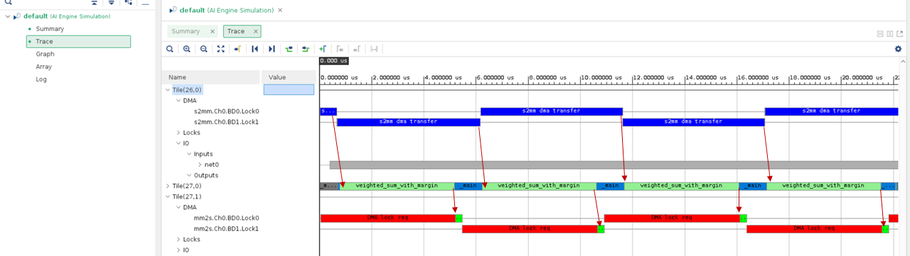
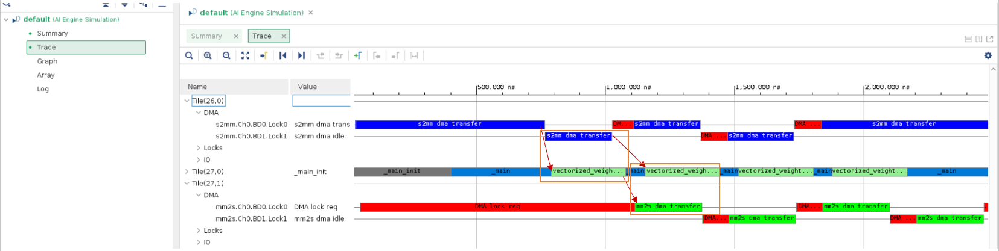
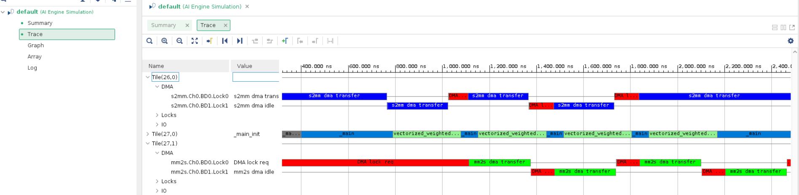

Version: Vitis 2021.2
This example introduces the AI Engine GMIO programming model. It includes three steps:
AI Engine GMIO Programming Model - Step 1 - Synchronous GMIO Transfer - Run AI Engine compiler and AI Engine simulator - Step 2 - Asynchronous GMIO Transfer for Input and Synchronous GMIO Transfer for Output - Run AI Engine compiler and AI Engine simulator - Step 3 - Asynchronous GMIO Transfer and Hardware Flow - Run AI Engine simulator and hardware flow - Conclusion
The AI Engine simulator event trace is used to see how performance can be improved step by step. The last step introduces code to make GMIO work in hardware.
In this step, the synchronous GMIO transfer mode is introduced. Change the working directory to single_aie_gmio/step1. Looking at the graph code aie/graph.h, it can be seen that the design has one output gmioOut with type output_gmio, one input gmioIn with type input_gmio, and an AI Engine kernel weighted_sum_with_margin.
class mygraph: public adf::graph
{
private:
adf::kernel k_m;
public:
adf::output_gmio gmioOut;
adf::input_gmio gmioIn;
mygraph()
{
k_m = adf::kernel::create(weighted_sum_with_margin);
gmioOut = adf::output_gmio::create("gmioOut",64,1000);
gmioIn = adf::input_gmio::create("gmioIn",64,1000);
adf::connect<adf::window<1024,32>>(gmioIn.out[0], k_m.in[0]);
adf::connect<adf::window<1024>>(k_m.out[0], gmioOut.in[0]);
adf::source(k_m) = "weighted_sum.cc";
adf::runtime<adf::ratio>(k_m)= 0.9;
};
};
The GMIO ports gmioIn and gmioOut, are created and connected as follows:
gmioOut = adf::output_gmio::create("gmioOut",64,1000);
gmioIn = adf::input_gmio::create("gmioIn",64,1000);
adf::connect<adf::window<1024,32>>(gmioIn.out[0], k_m.in[0]);
adf::connect<adf::window<1024>>(k_m.out[0], gmioOut.in[0]);
The GMIO instantiation gmioIn represents the DDR memory space to be read by the AI Engine and gmioOut represents the DDR memory space to be written by the AI Engine. The creator specifies the logical name of the GMIO, burst length (that can be 64,
128, or 256 bytes) of the memory-mapped AXI4 transaction, and the required bandwidth in MB/s (here 1000 MB/s).
Inside the main function of aie/graph.cpp, two 256-element int32 arrays (1024 bytes) are allocated by GMIO::malloc. The dinArray points to the memory space to be read by the AI Engine and the doutArray points to the memory space to be written by the AI Engine. In Linux, the virtual address passed to GMIO::gm2aie_nb, GMIO::aie2gm_nb, GMIO::gm2aie, and GMIO::aie2gm must be allocated by GMIO::malloc. After the input data is allocated, it can be initialized.
int32* dinArray=(int32*)GMIO::malloc(BLOCK_SIZE_in_Bytes);
int32* doutArray=(int32*)GMIO::malloc(BLOCK_SIZE_in_Bytes);
doutRef is used for golden output reference. It can be allocated by a standard malloc because it does not involve GMIO transfer.
int32* doutRef=(int32*)malloc(BLOCK_SIZE_in_Bytes);
GMIO::gm2aie and GMIO::gm2aie_nb are used to initiate read transfers from the AI Engine to DDR memory using memory-mapped AXI transactions. The first argument in GMIO::gm2aie and GMIO::gm2aie_nb is the pointer to the start address of the memory space for the transaction (here dinArray). The second argument is the transaction size in bytes. The memory space for the transaction must be within the memory space allocated by GMIO::malloc. Similarly, GMIO::aie2gm and GMIO::aie2gm_nb are used to initiate write transfers from the AI Engine to DDR memory. GMIO::gm2aie_nb and GMIO::aie2gm_nb are non-blocking functions that return immediately when the transaction is issued - they do not wait for the transaction to complete. In contrast, the functions, GMIO::gm2aie and GMIO::aie2gm behave in a blocking manner.
gr.gmioIn.gm2aie(dinArray,BLOCK_SIZE_in_Bytes);
gr.run(ITERATION);
gr.gmioOut.aie2gm(doutArray,BLOCK_SIZE_in_Bytes);
The blocking transfer (gmioIn.gm2aie) has to be completed before gr.run() because the GMIO transfer is in synchronous mode here. But the window input of the graph (in PING-PONG manner by default) has only two buffers to store the received data. This means that at the maximum, two blocks of window input data can be transferred by GMIO blocking transfer. Otherwise, the GMIO::gm2aie will block the design. In this example program, ITERATION is set to one.
Because GMIO::aie2gm() is working in synchronous mode, the output processing can be done just after it is completed.
Note: The memory is non-cacheable for GMIO in Linux.
In the example program, the design runs four iterations in a loop. In the loop, pre-processing and post-processing are done before and after data transfer.
for(int i=0;i<4;i++){
//pre-processing
for(int j=0;j<ITERATION*1024/4;j++){
dinArray[j]=j+i;
}
gr.gmioIn.gm2aie(dinArray,BLOCK_SIZE_in_Bytes);
gr.run(ITERATION);
gr.gmioOut.aie2gm(doutArray,BLOCK_SIZE_in_Bytes);
//post-processing
ref_func(dinArray,coeff,doutRef,ITERATION*1024/4);
for(int j=0;j<ITERATION*1024/4;j++){
if(doutArray[j]!=doutRef[j]){
std::cout<<"ERROR:dout["<<j<<"]="<<doutArray[j]<<",gold="<<doutRef[j]<<std::endl;
error++;
}
}
}
When PS has completed processing, the memory space allocated by GMIO::malloc can be released by GMIO::free.
GMIO::free(dinArray);
GMIO::free(doutArray);
Run the following make command to compile the design graph libadf.a and launch the AI Engine simulator:
make aiesim
Notice that “–dump-vcd” option is added to the AI Engine simulator command. Use vitis_analyzer to open AI Engine simulator run result.
vitis_analyzer ./aiesimulator_output/default.aierun_summary
Click the Trace tab in the Vitis™ analyzer. The events are shown as follows:

The red arrow denotes the dependency between data transfer and kernel execution. It can be seen that the data transfer and kernel execution are performed in a sequential manner. The time required for kernel execution is much longer than that for data transfer. Next, let us overlay data transfer and kernel execution with a vectorized kernel.
In the previous step, it was identified that the sequential manner of data transfer and kernel execution is the main bottleneck of the design performance. In this step, the AI Engine kernel is replaced with a vectorized version to reduce kernel execution time. Change the working directory to single_aie_gmio/step2. The vectorized kernel code is in aie/weighted_sum.cc.
Besides the kernel update, we try to do asynchronous GMIO transfers for inputs, but leave synchronous GMIO transfers for outputs in this step. The purpose of mixing synchronous and asynchronous GMIO transfers is to overlap data transfer and kernel execution. Thus, the performance is further improved.
Examine the code in main function aie/graph.cpp. This time ITERATION is four, and graph is executed by four iterations with gr.run(ITERATION) and the GMIO transaction from memory to AI Engine is through non-blocking GMIO API gr.gmioIn.gm2aie_nb(dinArray,BLOCK_SIZE_in_Bytes);. It does not block the following executions. However, we will keep using blocking GMIO API for output data.
//pre-processing
...
gr.gmioIn.gm2aie_nb(dinArray,BLOCK_SIZE_in_Bytes);//Transfer all blocks input data at a time
gr.run(ITERATION); //ITERATION=4
gr.gmioOut.aie2gm(doutArray,BLOCK_SIZE_in_Bytes);//Transfer all blocks output data at a time
...
//post-processing
Although a non-blocking GMIO API is used to transfer the input data, there is no need for explicit synchronization between data transfer and kernel execution. The synchronization between input data transfer and kernel execution is guaranteed by the window buffer, meaning that every iteration of kernel execution will wait for the block of input data to be ready. The output data is synchronized using a blocking GMIO API. After the blocking API returns, the data is guaranteed to be available in DDR memory and the post-processing sequence can be safely started.
Run the following make command to compile the design graph libadf.a and launch the AI Engine simulator:
make aiesim
Use vitis_analyzer to open AI Engine simulator run result.
vitis_analyzer ./aiesimulator_output/default.aierun_summary
Click the Trace tab in the Vitis Analyzer. The events are shown as follows:

The red arrow denotes the dependency between data transfer and kernel execution and orange rectangle shows overlapping between data transfer and kernel execution. It can be seen that the kernel execution time has been reduced (by comparing to data transfer) and data transfer and kernel execution are overlapping. In the next step, let us explore asynchronous output data transfer and its synchronization mechanism.
In this step, we will see how to asynchronously transfer output data with non-blocking GMIO API, and how to use GMIO::wait to perform data synchronization. In addition, we will see how to run the AI Engine program with GMIO in hardware.
Change the working directory to single_aie_gmio/step3. Examine aie/graph.cpp. The main difference in code is as follows:
gr.gmioIn.gm2aie_nb(dinArray,BLOCK_SIZE_in_Bytes);//Transfer all blocks input data at a time
gr.run(ITERATION);
gr.gmioOut.aie2gm_nb(doutArray,BLOCK_SIZE_in_Bytes);//Transfer all blocks output data at a time
//PS can do other tasks here when data is transferring
gr.gmioOut.wait();
Note: gr.gmioOut.aie2gm_nb() will return immediately after it has been called without waiting for the data transfer to be completed. PS can do other tasks after non-blocking API call when data is transferring. Then, it needs gr.gmioOut.wait(); to do the data synchronization. After GMIO::wait, the output data is in memory and can be processed by the host application.
To make GMIO work in hardware flow, the following code needs to be added to the main function before graph execution and GMIO data transfer:
#if !defined(__AIESIM__) && !defined(__X86SIM__)
#include "adf/adf_api/XRTConfig.h"
#include "experimental/xrt_kernel.h"
// Create XRT device handle for ADF API
char* xclbinFilename = argv[1];
auto dhdl = xrtDeviceOpen(0);//device index=0
xrtDeviceLoadXclbinFile(dhdl,xclbinFilename);
xuid_t uuid;
xrtDeviceGetXclbinUUID(dhdl, uuid);
adf::registerXRT(dhdl, uuid);
#endif
The macro __AIESIM__ is automatically defined by tool when running AI Engine simulator. The macro __X86SIM__ is automatically defined by tool when running x86simulator. Using the guard macro __AIESIM__ and __X86SIM__ as shown in the previous code, this part of code is not used in AI Engine simulator, but used in hardware flow and hardware emulation flow to make those flows work correctly.
At the end of the program, close the device using the XRT API xrtDeviceClose().
#if !defined(__AIESIM__) && !defined(__X86SIM__)
xrtDeviceClose(dhdl);
#endif
Run the following make command to compile the design graph libadf.a and launch the AI Engine simulator:
make aiesim
Use vitis_analyzer to open AI Engine simulator run result.
vitis_analyzer ./aiesimulator_output/default.aierun_summary
Click the Trace tab in the Vitis Analyzer. The events are displayed as shown in the following figure:

It can be seen that the data transfer and kernel execution are overlapping.
Run the following make command to build image for hardware:
make package TARGET=hw
After the package is done, run the following commands in the Linux prompt after booting Linux from an SD card:
export XILINX_XRT=/usr
cd /mnt/sd-mmcblk0p1
./host.exe a.xclbin
The host code is self-checking. It will check the output data against the golden data. If the output data matches the golden data after the run is complete, it will print the following:
PASS!
In this example, you learned about the following core concepts:
Programming model for blocking and non-blocking GMIO transactions
Improve design performance by using guidance from the AI Engine simulator event trace
Hardware flow for AI Engine GMIO
Next, review AIE GMIO Performance Profile.
Licensed under the Apache License, Version 2.0 (the “License”);
you may not use this file except in compliance with the License.
You may obtain a copy of the License at
http://www.apache.org/licenses/LICENSE-2.0
Unless required by applicable law or agreed to in writing, software
distributed under the License is distributed on an “AS IS” BASIS,
WITHOUT WARRANTIES OR CONDITIONS OF ANY KIND, either express or implied.
See the License for the specific language governing permissions and
limitations under the License.
Copyright© 2020–2021 Xilinx
XD007